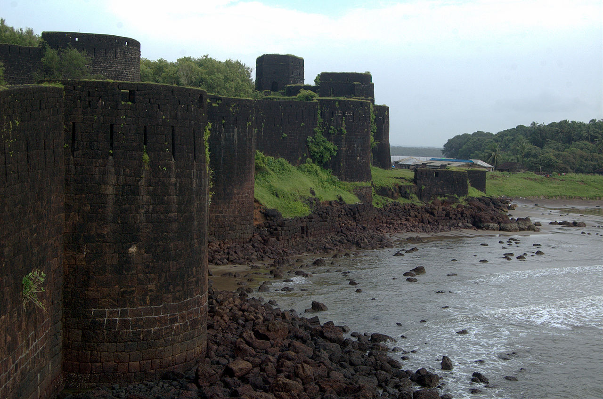

|
SINHAGAD FORTSinhagad is a hill fortress located at around 35 km southwest of the city of Pune, India. Some of the information available at this fort suggests that the fort could have been built 2000 years ago. The caves and the carvings in the Kaundinyeshwar temple stand as proofs for the same. |

|
RAIGAD FORTRaigad is a hill fort situated in Mahad, Raigad district of Maharashtra, India. The Raigad Fort, formerly known as Rairi, was built by Raje Chandraraoji More, The King of Jawali and a descendant of Chandragupta Maurya family, was then seized by Chhatrapati Shivaji Maharaj and made it his capital in 1674 when he was crowned as the King of a Maratha Kingdom which later developed into the Maratha Empire, eventually covering much of western and central India. |

|
PURANDAR FORTPurandar Fort is known as the birthplace of Chhatrapati Sambhaji Maharaj, the son of Chhatrapati Shivaji Maharaj. The fort is repeatedly mentioned in the rising of Shivaji Maharaj against the Adil Shahi Bijapur Sultanate and the Mughals. |
|  |
VIJAYDURGA FORTVijaydurg (sometimes written as Viziadurg), the oldest fort on the Sindhudurg coast, was constructed during the regime of Raja Bhoja II of the Shilahar dynasty (construction period 1193-1205) and restructured by Shivaji Maharaj. Earlier, the fort encompassed an area of 5 acres (1 acre = 4840 square yards or 4047 square metres) and was surrounded by sea on all four sides. Over the years the eastern trench was reclaimed and a road constructed thereon. Presently the area of fort is about 17 acres and is surrounded by the Arabian Sea on three sides. Shivaji Maharaj extended the area of the fort by constructing three walls on the eastern side, each 36 metres high. He also constructed 20 bastions. |